AI 已经完全重新定义软件开发的成本结构，过去那些「不值得做」的小工具，现在可以在数小时内借助 AI 完成交付。本文将结合个人实践，分享如何从日常工作中识别痛点、利用 AI 构建提效工具，并介绍几个在 AI 编程过程中积累的实用技巧。
01
前阵子看到一篇来自前特斯拉 AI 总监 Andrej Karpathy 的推文：
作为程序员，我从未感到自己如此落后。
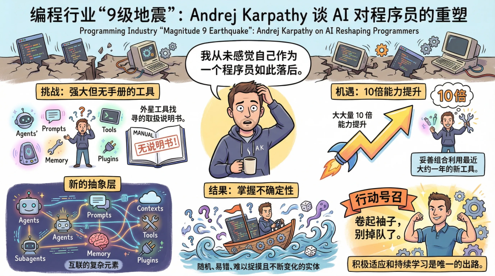
这句话有强烈的反差感，连这种顶尖 AI 研究人员都在感叹自己可能被时代甩在身后，可见 AI 发展速度之快。不过也从侧面说明了，软件技术范式正在发生根本性的转变。AI 不是难以企及的技术，而是已经成为像水电、互联网一样的基础设施。软件行业过去几十年积累的游戏规则正在被重写。
传统软件开发
回想一下，传统时代（也就是一年多前），开发定制化软件的成本有多高。不同的业务技术栈都存在壁垒，需要不同分工的程序员花大量的时间去学习和投入，交付一个软件往往需要数周到数月。
技术栈壁垒高：每个定制工具都需要专人、专项投入。
知识检索低效：开发者 60% 时间花在读文档与调试上。
交付周期长：内部工具从立项到上线往往需要数周到数月。
所以在以前，我们在工作中遇到一些小麻烦，脑子里可能会闪过一个念头——要是有一个提效工具该多好。但只要一想到投入的成本，想想还是算了，没必要为了一碟醋去包一顿饺子。
AI Native 时代
LLM + Agent 重构开发流程，交付周期从数周缩短到小时级。
技术栈壁垒大幅降低——自然语言即可产出可用软件。
工具开发成本被重新定义，过去「不值得做」的工具现在值得一试。
现在 AI 彻底改变了成本核算的方式，我们通过自然语言就可以指挥 AI 构建出软件。以前那些不值得做的小痛点，现在可以花上几个小时的时间，让 AI 帮我们解决。
在以前脱口秀很火的时候，有一句话叫「人人可以说五分钟脱口秀」。现在是：
开发门槛降低，每个人都能构建自己的提效工具。
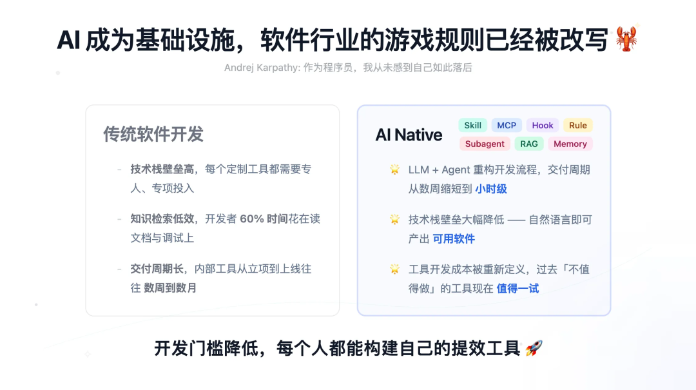
02
过去几个月，我借助 AI 给自己开发了多个提效工具，处理的场景均来自日常工作：
全局 AI 助手（Genie）
基于 Tauri + 本地 GeminiCli 实现的全局快捷 AI 问答工具（完全免费）。可以在电脑上任意页面按下快捷键唤起，唤起 Gemini 回答问题。还有一个内置的脚本大师，可以帮我生成即时脚本，比如写一段代码，帮我将网页里的表格数据导出成 CSV。
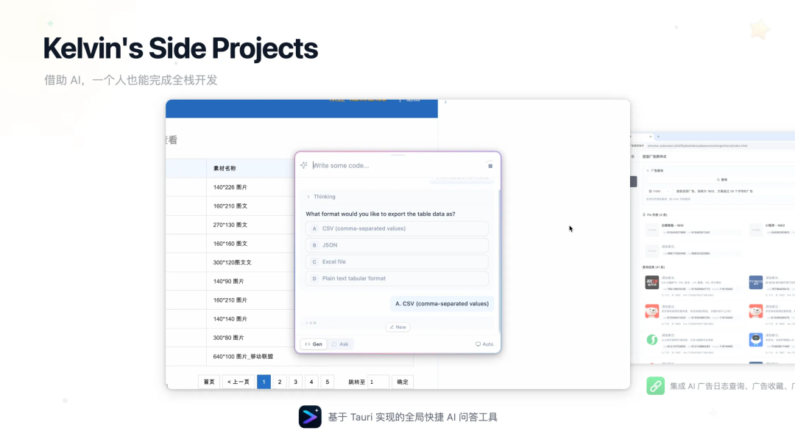
微信广告绑定助手
集成了 AI 广告日志查询、广告收藏、广告绑定功能，可以在一个页面快速做广告搜索和绑定。
学习 Agent（Muse）
自动整理文章内容，生成助记图，保存到 Notion。
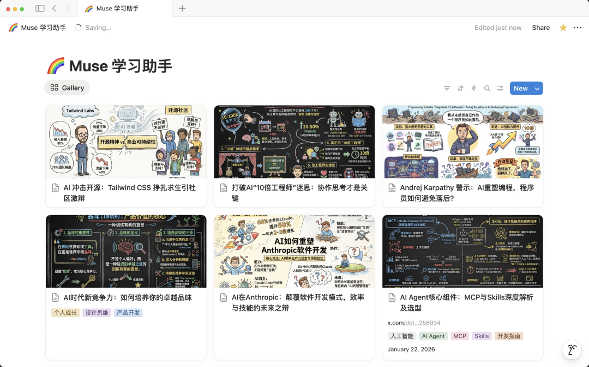
AI 翻译插件（Lingo）
帮我沉浸式阅读外文，理解式翻译，内容直接插回页面相同位置。
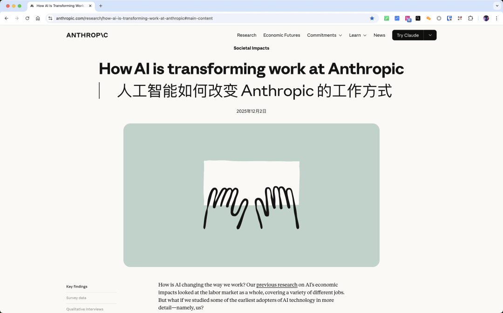
除了这些直接调用 AI 的提效工具，还有一些比较传统的、AI 暂时无法覆盖到的领域，也非常适合让 AI 来帮助开发工具：
公众号开发者工具
可以在公众号广告上长按，弹出开发者菜单，支持原地刷新广告、广告快速诊断、远程无限调试 iframe、广告收藏等等能力。
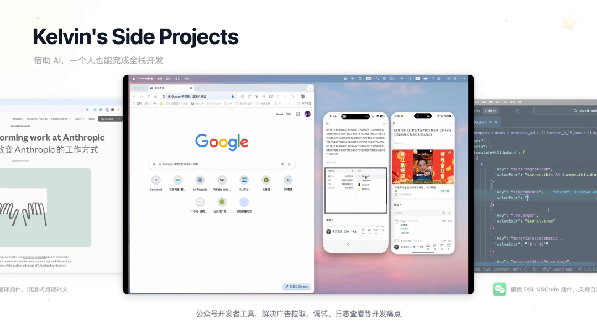
模板 DSL VSCode 插件
支持广告内部 DSL 的语法高亮和代码智能提示。
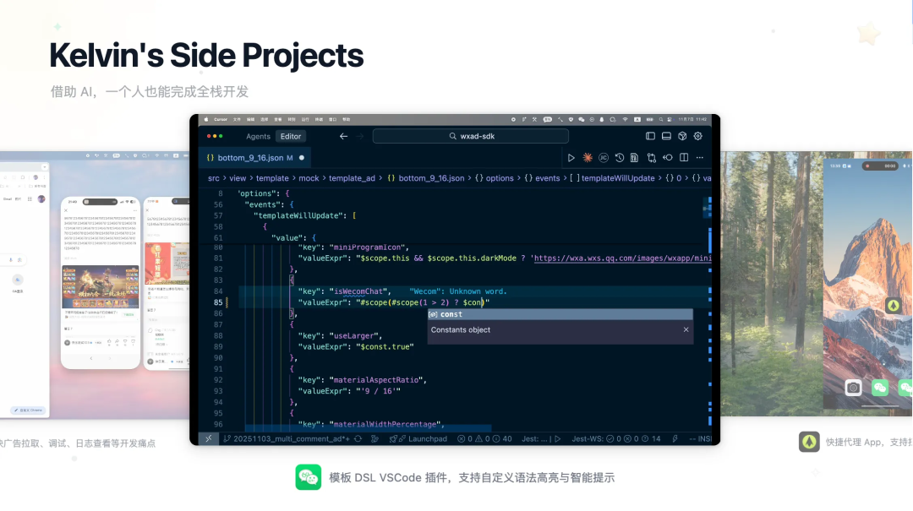
快捷代理 App（Easy Proxy）
支持扫码绑定代理的 App，可以快速让手机配置代理到本地电脑。
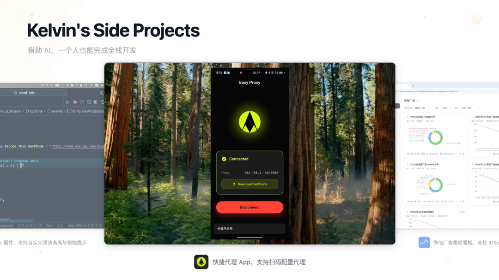
数据集成看板（Trends）
支持 IDKey 和 iLogs 自定义集成看板，方便在发布过程中盯盘和重点上报关注。
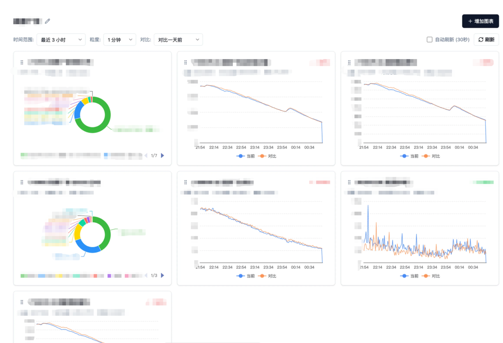
这些工具跨了很多技术栈，覆盖我在日常工作中的各个场景，很难想象在没有 AI 的时代，单人如何在空闲时间内开发出这么多的 SideProjects。
03
怎么判断哪些事情值得去提效？这里引入一个概念：Yak Shaving（薅牦牛毛）。
什么是 Yak Shaving？
举个例子：
你想洗车 → 发现软管破了；
去买软管 → 要去五金店；
开车去五金店 → 限号不能上路；
借邻居的车 → 邻居说借可以，但要接他小孩放学；
……（经过一系列离谱的链条）
到最后，你发现自己居然在青藏高原薅着牛毛。
YakShaving: 在解决问题的过程中，引发的一系列任务，导致最终偏离原本的目标，通常带有负面含义。
就好比，我们在玩开放世界游戏时，目标是去解救塞尔达公主，但莫名其妙地你会在翻雪山、在海里捕鱼、闯神庙，或者在找呀哈哈。
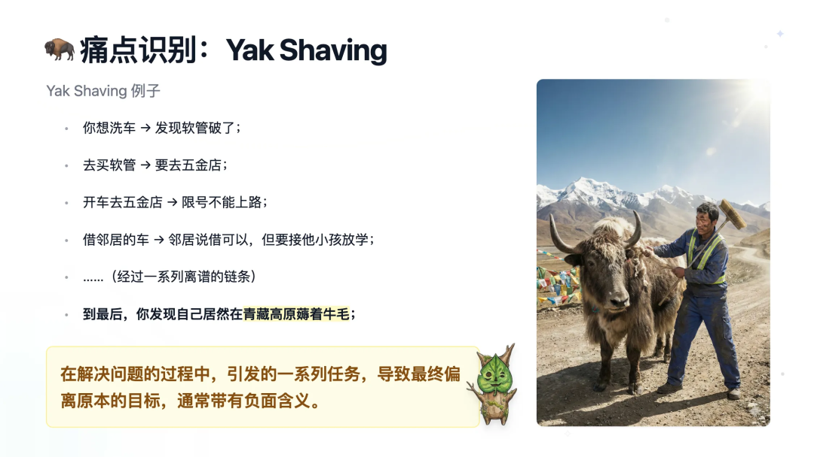
Yak Shaving 的故事充满荒诞的戏剧性，但由于基建差、系统老旧、流程长等等很多原因，这其实是大部分同学日常工作的常态。牛毛问题非常多，且不可避免。
但也有人觉得这些牛毛，其实是可以转化为生产力的机会。
Anthony Fu 的开源之路：从「薅牛毛」到「造工具」
我最早听到 Yak Shaving 这个词汇是在一个前端开发者大会上，开源社区开发者 Anthony Fu 分享他的开源之路是怎么走起来的。
slides 直达连接：https://talks.antfu.me/2024/vueconf-shenzhen/
大学刚毕业的时候，跟朋友一起做了一个分账的 App，然后开源出来。
觉得社区的 i18n 支持不够好，就自己做了一个
觉得社区的 Vue 工具库不够好用，做了 VueUse
想在 Vue2 里使用 Vue3 的特性，又封装了 composition-api。
后面又参与到 Vue3 开发、加入 Vite 团队。随着越来越多的发散和扩张，最后他就变成了大家眼里非常高产的开源社区明星。
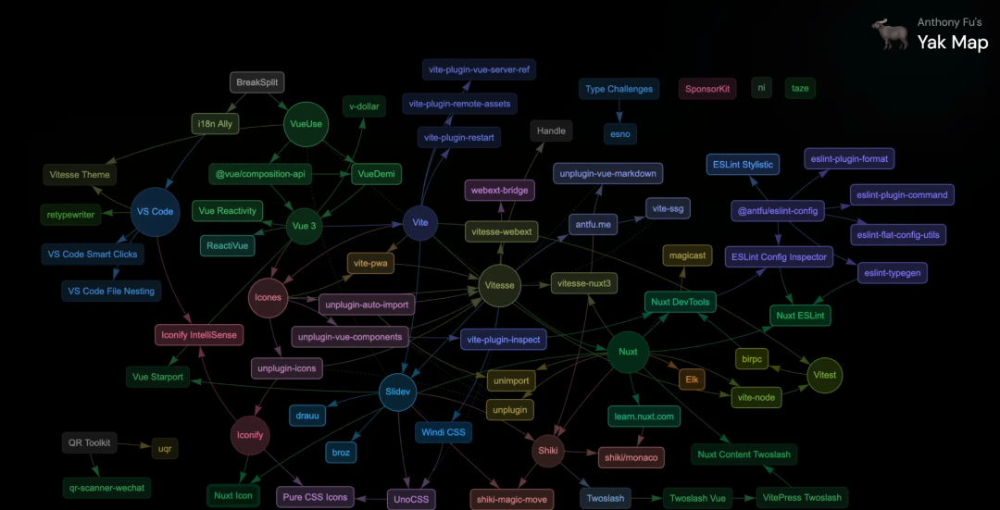
他的核心方法论是：
敏锐地发现工作中让你不舒服的点，尝试提出自己的解决方案。
所以，当你在工作中使用某个系统或者工具，觉得流程繁琐和低效时，不要只停留在吐槽和抱怨的层面，而是想办法，使用 AI 将这种负面的、偏离目标的阻力转化为创造工具的契机。痛点就是非常好的需求文档。
04
前面讨论了 AI 的能力，接下来有必要揭开 LLM 的面纱。因为很多人把 AI 想象成全知全能的超级硅基大脑，但实际上，了解它是如何工作的才是用好它的前提。
训练三阶段
大模型的训练大致可以分为三个阶段，了解这三个阶段，就可以了解它的「脾气」：
Pre-training（预训练）：海量文本编码为模型参数。这个阶段的模型就像一个知识渊博的书呆子，只学会了文字接龙，并不懂怎么跟人说话。
SFT（监督微调）：提供大量高质量的「提问-回答」范例，让模型学会对话，而非逐字续写。
RLHF（人类反馈强化学习）：对齐人类价值观与偏好，告诉模型什么是礼貌的、什么是合适的回答。
经过这三个阶段，模型表现得极其聪明，但本质上并没有产生「理解」能力。
本质是概率预测
LLM 的本质是 Token 概率预测——它只是在模拟它见过的文本模式，计算在当前语境下最有可能出现的下一个 Token 的概率。在它基于概率预测的大脑里，并没有数值大小的绝对概念。比如它可能觉得 0.11 在某个语境下比 0.9 更大。
三个实用技巧
基于 LLM 的工作原理，有三个实用的 Prompt 技巧：
1. 使用大模型能理解的 Token
不要用私有领域的黑话，使用开源界的统一语言。
不推荐：
公众号、广告、模板、Expr推荐：Vite、Flutter、Web、VSCode、Tauri
2. 单轮对话专注单一任务
大模型记忆窗口有限，塞入太多内容时，概率预测会受到严重干扰。
拆解任务粒度，直到一轮对话能完成。
不同的任务，拆分独立对话上下文。
3. 大模型在「模仿」而非「理解」
它能解奥数题，偶尔也分不清 0.11 和 0.9 哪个大。
拥抱 AI 不等于放弃审查，产出务必 Review。
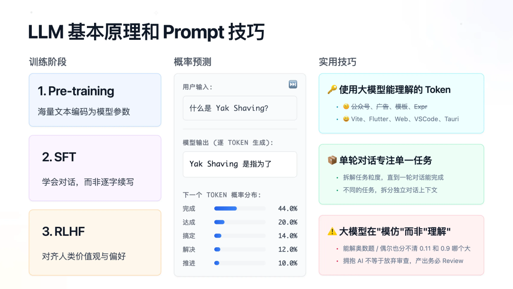
05
接下来再分享几个笔者近期接触到的，觉得比较实用的技巧。
技巧一：复杂任务，先规划再行动
直接让 AI 去启动一个复杂任务，通常得到的效果都很差，原因是 AI 没有充分理解需求。为了解决这个问题，让 Agent 充分理解需求再动手编码，可以有效减少返工。
目前有几种主流的规划方案：
方案一：SpecKit / OpenSpec
规范驱动开发（SDD），写代码前先通过宪章、需求澄清、分析计划、任务拆解，再开始干活。包含比较多命令，每一个任务都需要经过澄清、分析、拆解，相对而言比较重。
方案二：Plan Mode
Claude Code / Codebuddy 内置的规划模式。Agent 先通过问询理解需求，生成 Plan，确认后开始执行。
方案三：Superpowers（推荐）
一个基于 Skill 的完整开发工作流（GitHub 57k+ Stars）。技能自动触发，心智成本低，基本上需要记住「脑暴」就可以了，Skill 会自动决定是否需要使用方法论。
SuperPowers: https://github.com/obra/superpowers
Superpowers 的完整工作流包括 7 个步骤：
脑暴需求：追问提炼想法，探索备选方案，保存设计文档。
分支隔离：在新分支创建隔离工作空间，验证测试基线干净。
编写计划：把工作拆成小任务，每个任务包含精确的文件路径、完整代码和验证步骤。
SubAgent：每个任务派一个独立子 Agent，两阶段审查：先检查 Spec 合规，再检查代码质量。
TDD 驱动：强制 RED-GREEN-REFACTOR 循环——先写失败测试，再写最小实现，再重构。
代码审查：对照计划审查，按严重级别报告问题，Critical 问题阻断后续进度。
完成开发：验证测试通过，提供选项（Merge PR 保留 / 丢弃），清理 worktree。
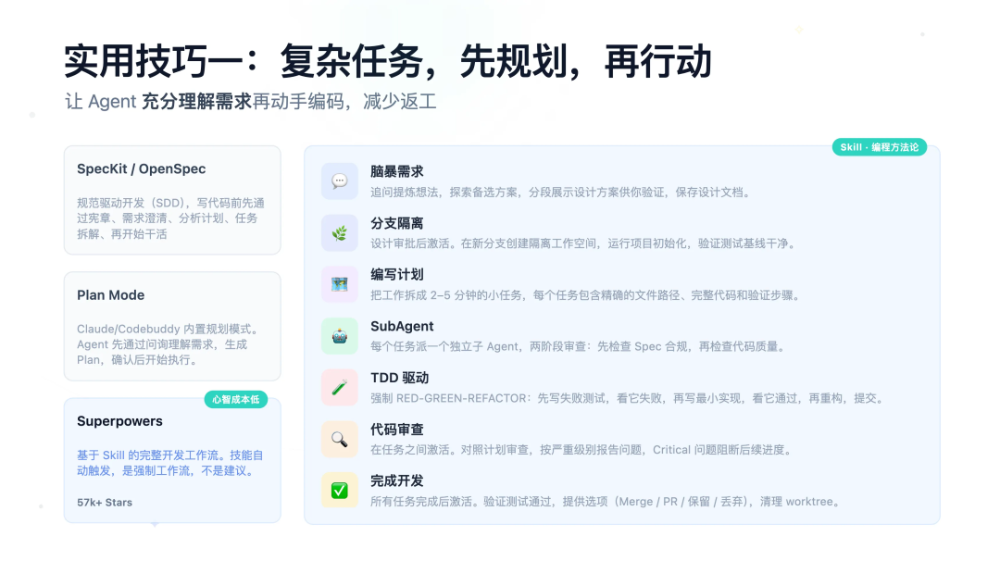
技巧二：Debug Mode 让 AI 掌握真实上下文
当你让大模型帮你写完第一版软件之后，大概率是不可用的。很有可能遇到这种场景：程序有 bug，但反复沟通多轮之后问题依旧没有解决。这种情况很浪费时间，也很让人受挫。
Debug Mode 闭环
用真实运行结果与日志驱动排查，而不是靠描述或猜测：
列出假设并添加打点：分析症状，生成可验证的假设列表。
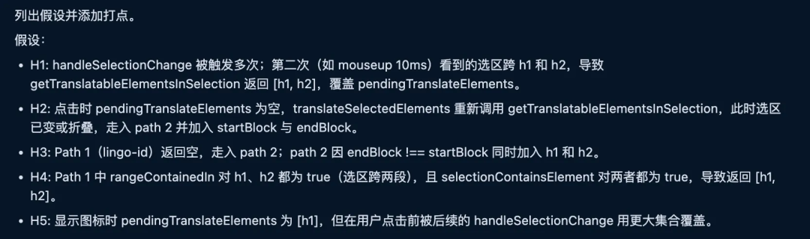
自动插桩，写入 Agent Log：在关键路径注入日志，捕获运行时数据。
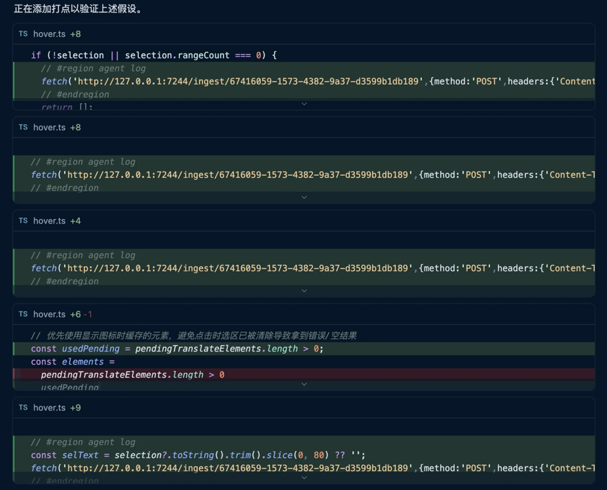
收集日志，复现验证：构建并执行复现步骤，用日志定位根因。
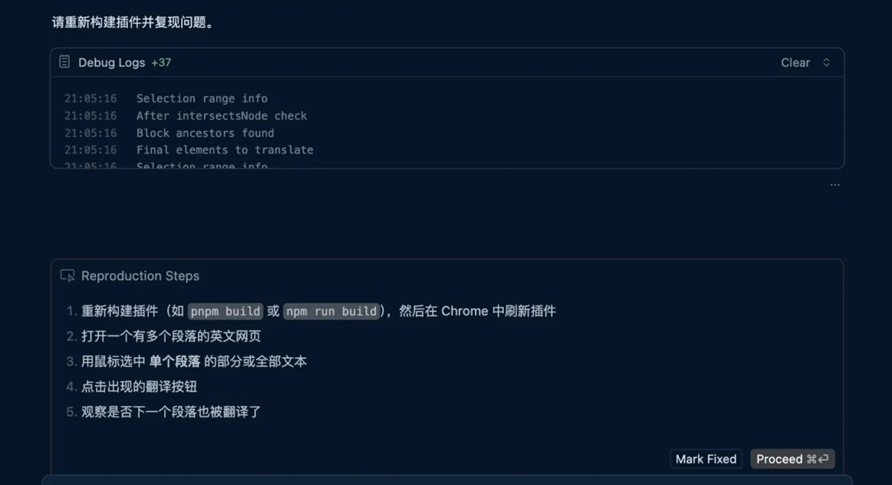
确认修复 / 继续循环：未修复 → 回到步骤 1；已修复 → 清理日志代码。
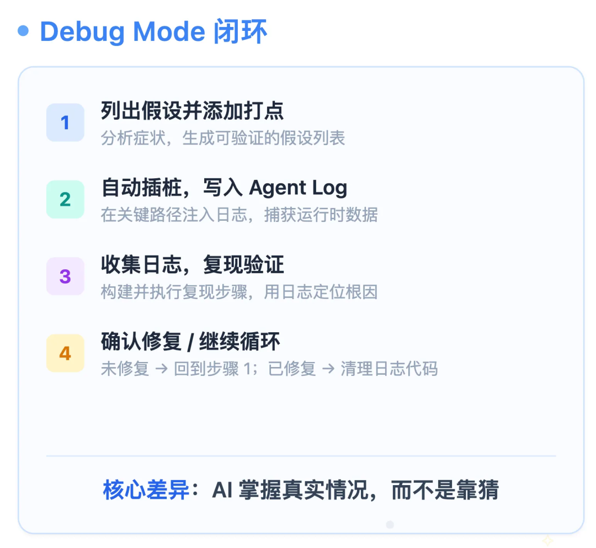
核心差异：AI 掌握真实情况，而不是靠猜。
我经历过几次多轮对话都没办法解决的问题，用 Debug Mode 一次修复通过，体验非常好。
技巧三：平行时空，多任务并行
在和 AI 对话的过程中，经常需要等待，这个过程也很容易导致分心和低效。这种情况下，我们可以用 Git Worktrees + 多窗口 + tmux 同时推进多个任务，充分利用并行能力。
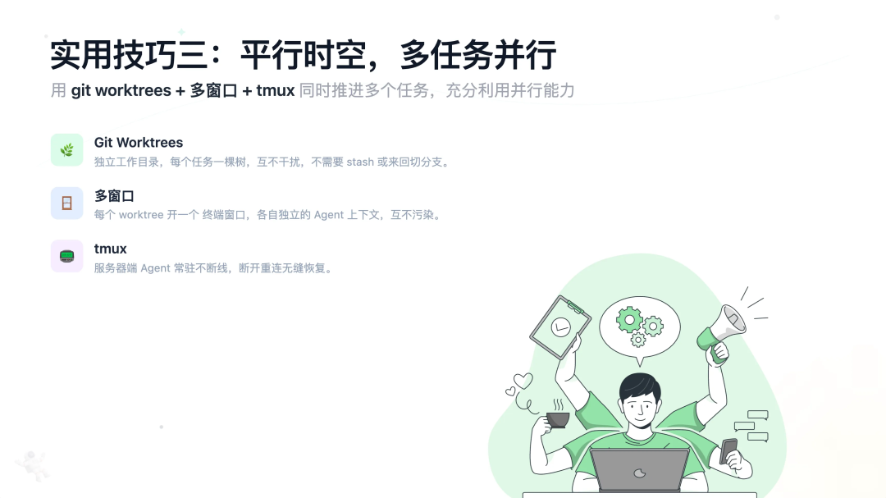
Git Worktrees
独立工作目录，每个任务一棵树，互不干扰。不需要 stash 或来回切分支，可以同时开发特性和修复 bug。
多窗口
每个 worktree 开一个终端窗口，各自独立的 Agent 上下文，互不污染。
tmux（强烈推荐）
服务器端 Agent 常驻不断线，不小心关闭了窗口，也能通过 tmux 恢复对话上下文。
06
最后还是以 Andrej Karpathy 的推文结尾，做 PPT 的时候刷到他的一篇推文，介绍他给自己开发了一个小工具，接入了自家跑步机，方便自己看运动量和心率。
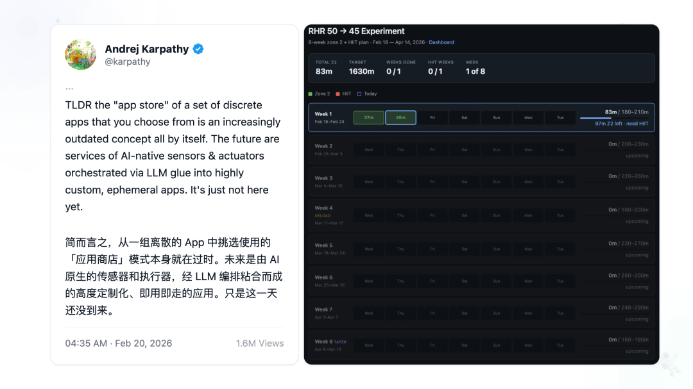
结尾也有一句话让我印象深刻：
“简而言之，从一组离散的 App 中挑选使用的「应用商店」模式本身就在过时。未来是由 AI 原生的传感器和执行器，经 LLM 编排粘合而成的高度定制化、即用即走的应用。只是这一天还没到来。”
AI 让软件成本暴跌之后，人人可以通过数小时写一个定制化工具来解决领域内的特定问题。去 AppStore 内找通用工具软件的方式即将成为过去式。所以在未来，人机交互没有发生重大变化之前，我们可以继续指挥 AI 去帮我们做一些定制化工具，并且这些成本会越来越低，越来越智能。
结语
感谢阅读，希望这些实践和技巧能帮助大家在日常工作中更好地利用 AI，把那些「不值得做」的小痛点变成触手可及的提效工具。
感谢你读到这里，不如关注一下？👇